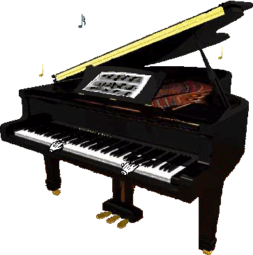

Trompete
Confira as ofertas


|  |
Os instrumentos são inúmeros. Afinal, o Jazz é algo tão mítico e fabuloso que pode englobar qualquer “coisa” em que se possa tirar música. Desde que se tenha swing e improvisação. Praticamente não há nenhum instrumento – poderíamos mesmo dizer: nenhum tipo de fonte sonora – que não tenha sido utilizado musicalmente no jazz por alguém. |